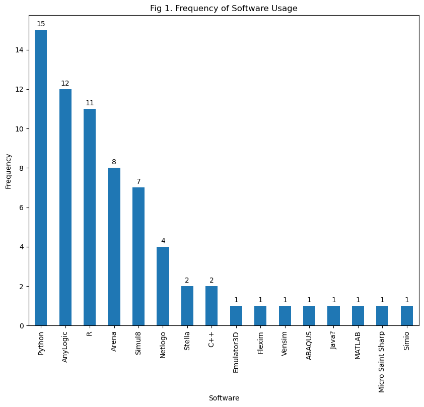
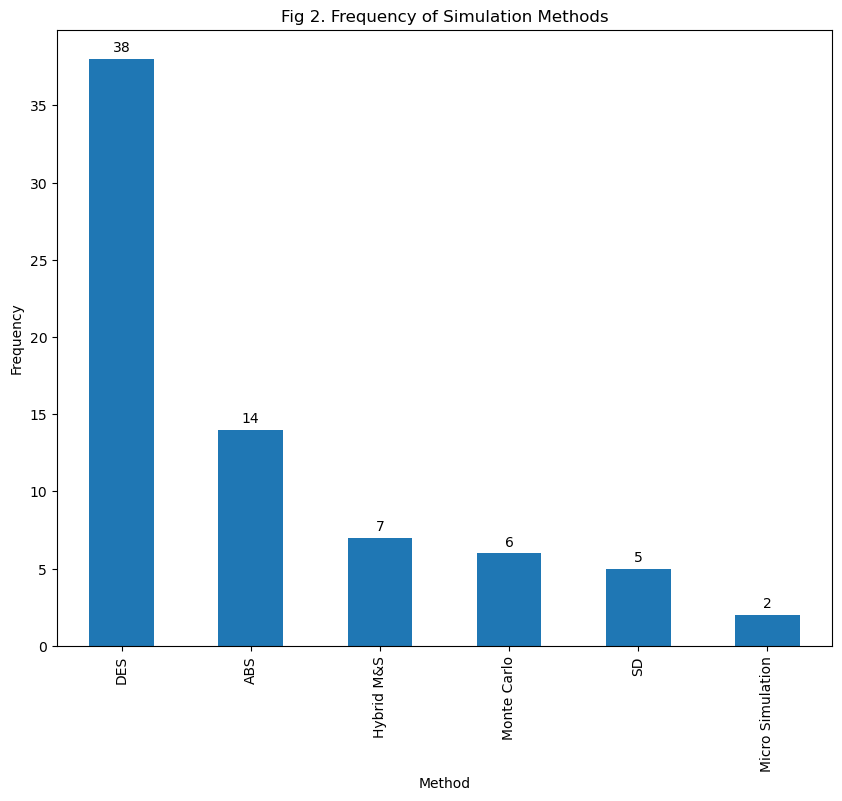
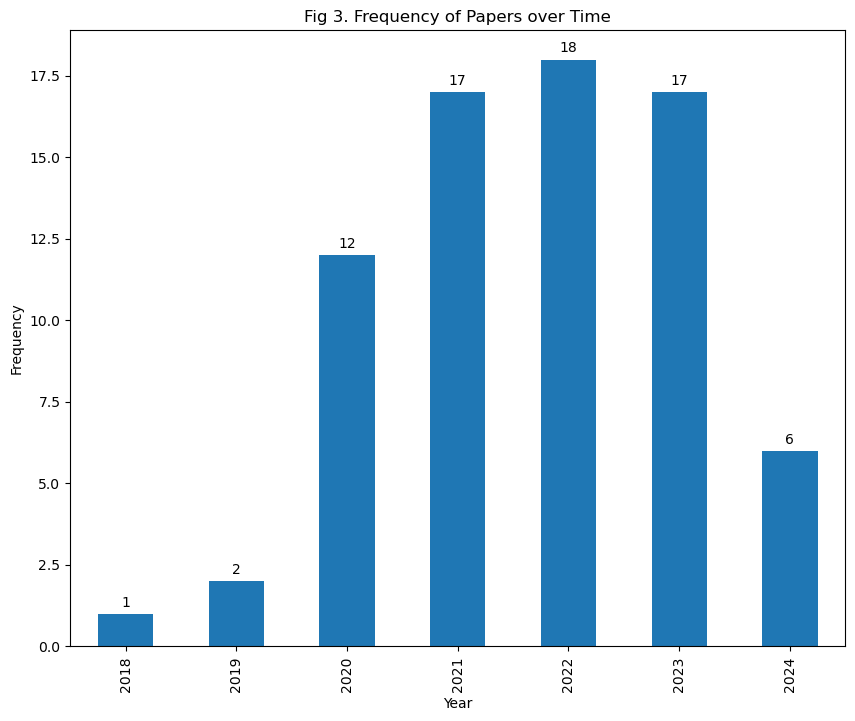
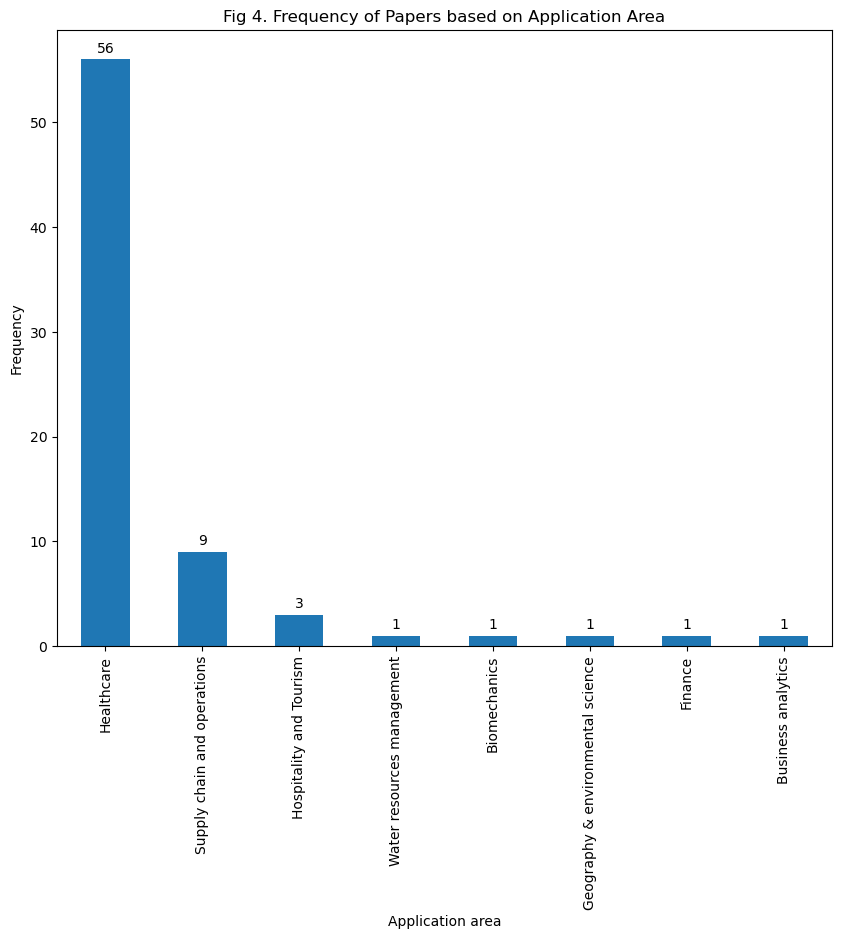
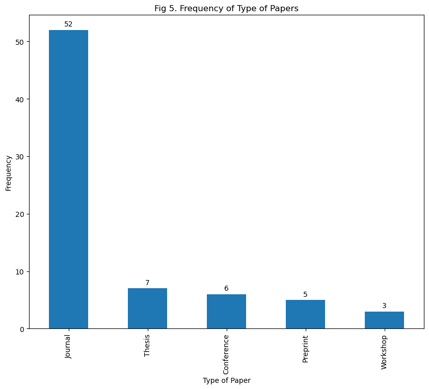
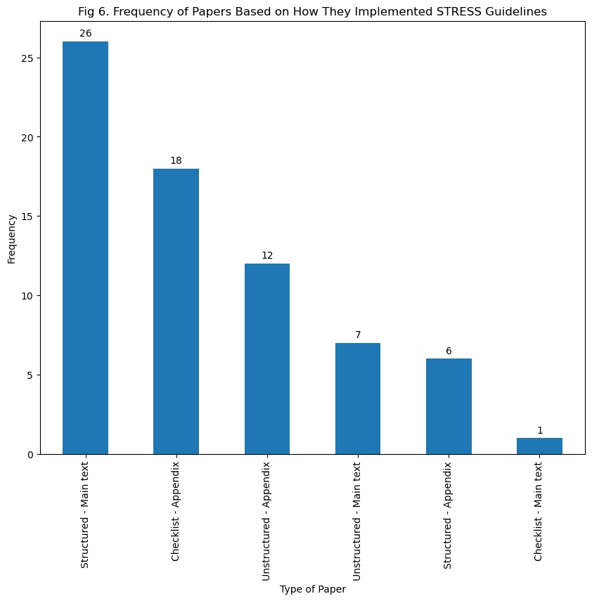
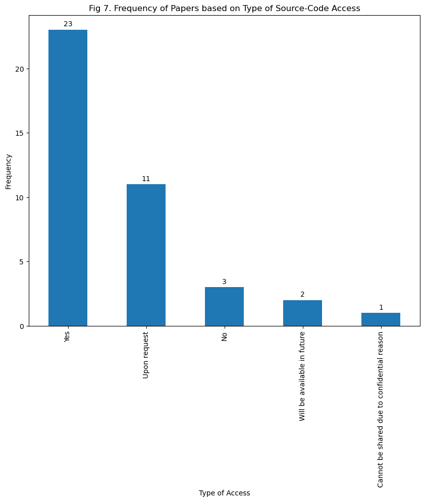
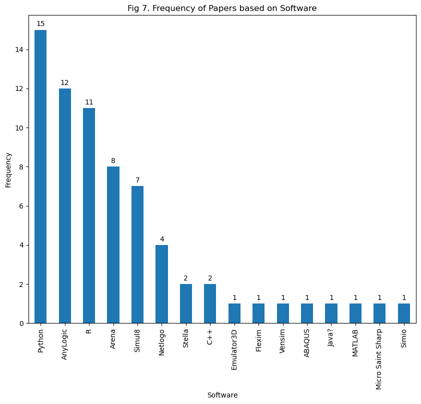

import pandas as pd
import numpy as np
import matplotlib.pyplot as pltAnalysis (draft)
This notebook contains the Python script that analyses the data extracted from the STRESS review.
csv_file_path = 'PY_STRESS.csv'
df = pd.read_csv(csv_file_path, index_col='No')df.describe()| Unnamed: 0 | Year | ...27 | |
|---|---|---|---|
| count | 174.000000 | 169.000000 | 0.0 |
| mean | 87.500000 | 2021.757396 | NaN |
| std | 50.373604 | 1.564208 | NaN |
| min | 1.000000 | 2018.000000 | NaN |
| 25% | 44.250000 | 2021.000000 | NaN |
| 50% | 87.500000 | 2022.000000 | NaN |
| 75% | 130.750000 | 2023.000000 | NaN |
| max | 174.000000 | 2024.000000 | NaN |
## Separating the studies that have used the STRESS guidelines in another dataframe
## Used?: a Yes/No variable.
USED_STRESS = df[df['Used?'] == 'Yes']USED_STRESS.count()Unnamed: 0 73
Publication 73
Authors 73
Year 73
Type of paper 73
Journal 72
Name of Univerity 73
Type of study 73
Pre-prints 73
DOI 73
Used? 73
Partially? 70
Target authors 73
Method 72
Hybridisation 7
1. Objectives (purpose, model outputs, aims of experimentation) 70
2. Logic (base model overview diagram, base model logic, scenario logic, algorithms, components) 70
3. Data (data sources, input parameters, preprocessing, assumptions 70
4. Experimentation (initialisation, run length, estimation approach) 70
5. Implementation (software and programming language, random sampling, model execution, system specification) 70
6. Code access (computer model sharing statement) 70
Source code access 40
Software 69
Application area 73
Case study 72
Note 16
STRESS Implementation 70
Questions to be asked from authors / experts 4
...27 0
Fatemeh's Note 0
dtype: int64## Frequency of software that have been used in the STRESS studies
Software_freq = USED_STRESS['Software'].value_counts()
plt.figure(figsize=(10,8))
SB = Software_freq.plot(kind='bar')
plt.title('Fig 1. Frequency of Software Usage')
plt.xlabel('Software')
plt.ylabel('Frequency')
SB.bar_label(SB.containers[0], label_type='edge', padding=3)
plt.show()
## Frequency of simulation methods that have been used in STRESS studies.
## Hybrid M&S could be the hybridisation of simulation methods (e.g. SD+DES)
## or hybridisation of a simulation method with data science approach (e.g.
## Monte Carlo simulation + Machine learning)
Method_freq = USED_STRESS['Method'].value_counts()
plt.figure(figsize=(10,8))
MB = Method_freq.plot(kind='bar')
plt.title('Fig 2. Frequency of Simulation Methods')
plt.xlabel('Method')
plt.ylabel('Frequency')
# Add data labels on the bars
MB.bar_label(MB.containers[0], label_type='edge', padding=3)
plt.show()
## The frequency of papers that have used STRESS guidelines based on the publication year
USED_STRESS['Year'] = USED_STRESS['Year'].astype(int)
Year_freq = USED_STRESS['Year'].value_counts().sort_index(ascending=True)
plt.figure(figsize=(10,8))
YB = Year_freq.plot(kind='bar')
plt.title('Fig 3. Frequency of Papers over Time')
plt.xlabel('Year')
plt.ylabel('Frequency')
# Add data labels on the bars
YB.bar_label(YB.containers[0], label_type='edge', padding=3)
plt.show()/tmp/ipykernel_48906/3609144051.py:3: SettingWithCopyWarning:
A value is trying to be set on a copy of a slice from a DataFrame.
Try using .loc[row_indexer,col_indexer] = value instead
See the caveats in the documentation: https://pandas.pydata.org/pandas-docs/stable/user_guide/indexing.html#returning-a-view-versus-a-copy
USED_STRESS['Year'] = USED_STRESS['Year'].astype(int)
## Application areas that STRESS have been employed for.
APP_freq = USED_STRESS['Application area'].value_counts()
plt.figure(figsize=(10,8))
APB = APP_freq.plot(kind='bar')
plt.title('Fig 4. Frequency of Papers based on Application Area')
plt.xlabel('Application area')
plt.ylabel('Frequency')
# Add data labels on the bars
APB.bar_label(APB.containers[0], label_type='edge', padding=3)
plt.show()
## Type of papers that have used STRESS; which includes journal, conference,
## workshop, and preprints papers as well as thesis.
Paper_Type_freq = USED_STRESS['Type of paper'].value_counts()
plt.figure(figsize=(10,8))
PTB = Paper_Type_freq.plot(kind='bar')
plt.title('Fig 5. Frequency of Type of Papers')
plt.xlabel('Type of Paper')
plt.ylabel('Frequency')
# Add data labels on the bars
PTB.bar_label(PTB.containers[0], label_type='edge', padding=3)
plt.show()
## Frequency of journals that STRESS papers have been published in them.
Journal_freq = USED_STRESS['Journal'].value_counts()
Journal_freq = Journal_freq.reset_index()
Journal_freq.columns = ['Journal', 'Frequency']
# Print the resulting DataFrame
print(Journal_freq) Journal Frequency
0 Journal of Simulation 11
1 Winter Simulation Conference 6
2 BMJ 4
3 Proceedings of the Operational Research Societ... 3
4 University of Southampton 3
5 Operations Research for Health Care 3
6 Lancaster University 2
7 Health Care Management Science 2
8 Plos one 2
9 JAMA 2
10 Health Systems 2
11 Journal of the Operational Research Society 2
12 BMC Health Services Research 2
13 Healthcare 2
14 Istanbul Business Research 2
15 medRxiv 2
16 International Journal of Nursing Studies 1
17 Value in Health 1
18 Anesthesiology 1
19 Frontiers in Oncology 1
20 Health and Social Care Delivery Research 1
21 Medical Decision Making 1
22 Contemporary Clinical Trials 1
23 cancers 1
24 Plos Medicine 1
25 arXiv 1
26 Electronics 1
27 Water 1
28 Translational Lung Cancer Research 1
29 Journal of Evaluation in Clinical Practice 1
30 Frontiers in Neurology 1
31 OSF 1
32 Computational Management Science 1
33 Cureus 1
34 Stroke 1
35 Norwegian University of Science and Technology 1
36 National University of Irland 1
37 Computational Management Science 1## Frequency of papers that used STRESS fully/partialy.
Partially_freq = USED_STRESS['Partially?'].value_counts()
Partially_freq = Partially_freq.reset_index()
Partially_freq.columns = ['Partially?', 'Frequency']
# Print the resulting DataFrame
print(Partially_freq) Partially? Frequency
0 Yes 45
1 No 25## Frequency of papers based on how they implemented/ used STRESS in their manuscripts.
## The guideline have been listed either in main text, or in appendix. Also it might be
## in the form of checklist, structured (that contains the guidelines' elements with
## description), and unstructured (which might contain some elements of the guideline).
Checklist_freq = USED_STRESS['STRESS Implementation'].value_counts()
plt.figure(figsize=(10,8))
CAB = Checklist_freq.plot(kind='bar')
plt.title('Fig 6. Frequency of Papers Based on How They Implemented STRESS Guidelines')
plt.xlabel('Type of Paper')
plt.ylabel('Frequency')
# Add data labels on the bars
CAB.bar_label(CAB.containers[0], label_type='edge', padding=3)
plt.show()
## Type of access that papers provided for the simulation model/ code.
Code_Access_freq = USED_STRESS['Source code access'].value_counts()
plt.figure(figsize=(10,8))
SCAB = Code_Access_freq.plot(kind='bar')
plt.title('Fig 7. Frequency of Papers based on Type of Source-Code Access')
plt.xlabel('Type of Access')
plt.ylabel('Frequency')
# Add data labels on the bars
SCAB.bar_label(SCAB.containers[0], label_type='edge', padding=3)
plt.show()
## Based on simulation software.
Software_freq = USED_STRESS['Software'].value_counts()
plt.figure(figsize=(10,8))
SF = Software_freq.plot(kind='bar')
plt.title('Fig 7. Frequency of Papers based on Software')
plt.xlabel('Software')
plt.ylabel('Frequency')
# Add data labels on the bars
SF.bar_label(SF.containers[0], label_type='edge', padding=3)
plt.show()
target_authors = [
'Monks', 'Currie', 'Onggo', 'Robinson', 'Kunc', 'Taylor'
]USED_STRESS['Authors'] = USED_STRESS['Authors'].astype(str)/tmp/ipykernel_48906/2495784325.py:1: SettingWithCopyWarning:
A value is trying to be set on a copy of a slice from a DataFrame.
Try using .loc[row_indexer,col_indexer] = value instead
See the caveats in the documentation: https://pandas.pydata.org/pandas-docs/stable/user_guide/indexing.html#returning-a-view-versus-a-copy
USED_STRESS['Authors'] = USED_STRESS['Authors'].astype(str)target_included = []
not_target_authors = []for index, row in USED_STRESS.iterrows():
authors_in_row=row['Authors']
# Check for missing or NaN values
if pd.isna(authors_in_row):
not_target_authors.append(None) # If it's NaN, consider as not_target_authors
continue
authors_in_row = authors_in_row.split(", ") # Assuming author names are separated by ', '
for authors in authors_in_row:
if any(target_authors in authors for target_authors in target_authors):
target_included.append(row) # Append the entire row's authors to the target_included list
else:
not_target_authors.append(row) # Append the entire row's authors to the not_target_authors list
df_target_included = pd.DataFrame(target_included, columns=['Authors'])
df_not_target_authors = pd.DataFrame(not_target_authors, columns=['Authors'])
# Display the DataFrames
print("Papers with target authors:", df_target_included)
print("Papers without target authors:", df_not_target_authors)Papers with target authors: Authors
10 Griffiths, Peter, Christina Saville, Jane E. B...
22 Allen, Michael, Amir Bhanji, Jonas Willemsen, ...
28 Griffiths P, Saville C, Ball JE, Chable R, Dim...
32 Saville, Christina, Thomas Monks, Peter Griffi...
38 Penn, Marion L., Thomas Monks, Anna A. Kazmier...
50 Harper A, Monks T, Wilson R, Redaniel MT, Eyle...
65 Harper, Alison, and Thomas Monks
91 Harper, Alison, Thomas Monks, and Sean Manzi
95 Taylor, Simon JE, Anastasia Anagnostou, Thomas...
95 Taylor, Simon JE, Anastasia Anagnostou, Thomas...
95 Taylor, Simon JE, Anastasia Anagnostou, Thomas...
95 Taylor, Simon JE, Anastasia Anagnostou, Thomas...
95 Taylor, Simon JE, Anastasia Anagnostou, Thomas...
95 Taylor, Simon JE, Anastasia Anagnostou, Thomas...
114 Harper, Alison, Martin Pitt, and Thomas Monks
122 Allen, Michael, Charlotte James, Julia Frost, ...
129 Wise, Alan F., Lucy E. Morgan, Alexander Heib,...
134 Gu, Yunfei, Bhakti Stephan Onggo, Martin Kunc,...
134 Gu, Yunfei, Bhakti Stephan Onggo, Martin Kunc,...
135 Allen, Michael, Amir Bhanji, Jonas Willemsen, ...
Papers without target authors: Authors
5 Riediker Michael, Dai-Hua Tsai
5 Riediker Michael, Dai-Hua Tsai
8 Shafiee Sanaz, Saeed Jahanyan, Ali Rajabzadeh ...
8 Shafiee Sanaz, Saeed Jahanyan, Ali Rajabzadeh ...
8 Shafiee Sanaz, Saeed Jahanyan, Ali Rajabzadeh ...
.. ...
170 Moshref-Javadi, Mohammad, Kristof P. Van Cauwe...
170 Moshref-Javadi, Mohammad, Kristof P. Van Cauwe...
171 Wang, Zilu, and Zhaolin Hu
171 Wang, Zilu, and Zhaolin Hu
171 Wang, Zilu, and Zhaolin Hu
[395 rows x 1 columns]